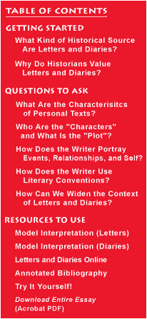
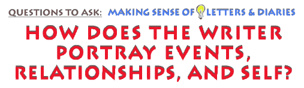

This is an archived copy of History Matters, provided by the Roy Rosenzweig Center for History and New Media. To explore this content in a new interface, visit Who Built America?.

|
 |
 Developing a sense of the plot, cast of characters, and language of a given diary or collection of letters is the surest way to begin reading in greater depth. Now we can think further about strategies for moving into the pages of a personal text, entry by entry, letter by letter, looking for how this writer gives us a particular lens through which to see the past by creating herself as a writer at the same time she portrays others and the world around her. Consider again the observation, made earlier, that personal texts are fueled by accounts of key events that occur over time, events which the writer feels are important enough to express: a marriage, a disastrous storm, a daughter leaving home, the routine of work. But events are only a starting point. The tale of events inevitably reveals a pattern of key relationships – the writer’s friendships, kinships, acquaintances and strangers. These relationships, in turn, shape our understanding (just as they shaped the writer’s) of which events are important to tell. A central strategy for us as readers of a text, then, is to understand how the writer joins events and relationships together, each giving the other substance. We can see events and relationships as a kind of dynamic logic – a dialectic – of personal texts which, over time, reveals patterns of choice and characterization by writers, giving each writer a certain style or voice, a distinct way of representing self and others. It also shows that the meaning of events is not static, but changes as correspondents change over time. In certain ways, personal letters reveal the dialectic of events and relationships more clearly than do diaries. Most family letters are driven by "news," and so they are rich with events which most writers try to characterize in detail. Because there is a distinct "other" being addressed – the recipient of the letter – the writer openly adapts his account of events to the differences among his various correspondents, thus giving us different interpretations of the same event as well as a different sense of the writer’s own intellect and feeling. For example, medical student Joseph Jones responded quite differently in 1853 to letters from his father and mother. Each of his parents had written to express anxiety over the fact that Joseph was cutting up cadavers as part of his anatomy course; each feared he would injure himself morally by disrespecting the human body. Jones defended his study of anatomy (and at the same time inscribed gendered differences in his relationship with his parents) by arguing substantial points of science and religion with his father, while assuring his mother that nothing substantial was at stake. Moreover, letters are especially sensitive to the absence of the other, and to the distance between correspondents which letters are meant to bridge. Although all writers aim to bridge the gap, some emphasize the gap while others emphasize the bridge. This often made the exchange of letters itself an event worth remarking upon, as lovers or parents and children blamed each other for neglect or praised each other for timely and satisfying letters.* Although the number of letters we have in front of us, and their spacing in time, obviously determine what we can know of both events and relationships, you can develop a set of questions for any group of correspondents: which events – trivial or monumental – do correspondents choose to share with each other? Are any events or topics ignored or skirted? Who among the correspondents seem the most intimate and who seem most at odds? How does each writer seem to value formal respect and careful language, on the one hand, and humor, exaggeration, and slang, on the other? Does one individual seem to be the central person in the correspondence, and, conversely, is there an individual everyone seems to regard as shy or silent? Which relationships seem most stable over the course of the correspondence, which most volatile, and how do events in their lives reveal these qualities? How do all of these relate to the identities of the various correspondents, in terms of gender, class, age? Many of these questions can be asked as well of a diarist’s account of events and relationships. Diarists who begin writing because of dramatic changes in their lives often write in a way as informative and clear as any letter-writer penning a letter to friends or family. On the other hand, the diary is a more introspective form than the letter. This sometimes means that events and relationships are more difficult to figure out. But once we do, a diary, compared to a set of letters, often permits close attention to mental as well as social events and allows for more examination of the quality of the writer’s relationships with others. Moreover, a diary is more likely to turn into an extended narrative akin to a work of fiction or a memoir. Because the diarist herself is her only immediate audience, she can freely explore different expressive possibilities, as Steven Kagle and Lorenza Gramegna point out, recombining events and relationships into a full, satisfying story where "the frightening can be made to seem exciting or comical and the improbable hope, possible." For instance, Sarah Morgan, a young Louisiana woman who admitted being terrified by an encounter with enemy Yankee troops during the Civil War, nonetheless wrote in a spirited, offhand way about her adventures – even her flirtations with U.S. soldiers – when she turned to her diary. New York civic figure George Templeton Strong, also during the Civil War, publically expressed his assurance that the Union would stay united, but wrote bigoted passages in his diary about Irish immigrants whose loyalty he doubted. The point here is not that diarists fabricate things (though some might) but rather that a diary is a "safer" place than a letter in which to write one’s innermost thoughts, with the diarist more likely to experiment with ideas and views (and writerly identities) he would not risk in a letter.* Most diarists and correspondents at least allude to ways that events and relationships either change or keep their continuity over time. Although writers of letters usually mark time in obvious ways (one letter calls for another, and most correspondents tally letters sent and received) diaries have a more elastic relation to time, stretching one event over several pages, disposing of another in a single sentence. One diarist might write to give an even texture to all that happens to her, fitting events and relationships into a sort of emotional and temporal "middle ground" throughout the diary. Another diarist, though, might write in a perpetual state of excitement, making the ordinary seem a tale of drastic change. Although some diaries may seem like autobiographies in their approach to time, contextualizing everything in terms of "I," it is well to remember that for all of their expressiveness, diaries do not, like autobiographies, look back on the past. Diaries draw their energy from the way the writer searches for meaning while in the thick of changing events and relationships which no one completely grasps. The diarist searches to give the mass of associations and trail of events meaning by finding a consistent voice, whereas the letter writer seeks continuity in the flow of letters, in the personal ties they represent as well as for the news they bear. Because diaries more than letters privilege experiments in subjectivity, key questions to ask of a diarist are those that help us understand not only the events and relationships captured in the diary’s pages, but also the diarist’s relative eagerness to explore the possibilities of diary-keeping. Who is the “other” the diarist seems to be writing to: a friend, a wiser self, a future self? What other literary forms does a given diary most resemble, e.g., a letter, a novel, a ledger? What kinds of events, times of the day or week, and emotional states seem to motivate the diarist to write? Does the diarist always write in the first person or does he sometimes distance himself by avoiding the “I?” Which people in the diarist’s life appear most frequently in her pages, and why? Do any or all of these features of a given diary change over its course, and if so, in what way?
|
||||||
|
|
|||||||